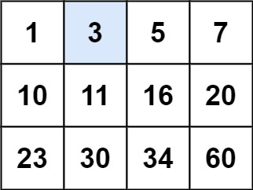
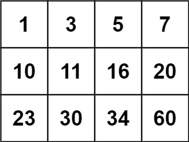

74. 搜索二维矩阵
| 题目信息 | 内容 |
|---|---|
| 难度 | 中等 |
| 核心模式 | 二维下标映射一维 |
| 时间复杂度 | O(log(mn)) |
| 空间复杂度 | O(1) |
题目与约束
给你一个满足下述两条属性的 m x n 整数矩阵：
- 每行中的整数从左到右按非严格递增顺序排列。
- 每行的第一个整数大于前一行的最后一个整数。
给你一个整数 target ，如果 target 在矩阵中，返回 true ；否则，返回 false 。
你必须编写一个时间复杂度为 O(log(m * n)) 的解决方案。
示例 1：

输入：matrix = [[1,3,5,7],[10,11,16,20],[23,30,34,60]], target = 3
输出：true
示例 2：

输入：matrix = [[1,3,5,7],[10,11,16,20],[23,30,34,60]], target = 13
输出：false
提示：
m == matrix.lengthn == matrix[i].length1 <= m, n <= 100-104 <= matrix[i][j], target <= 104
核心不变量
mid / n 得行，mid % n 得列。
完整推导
思路推导
-
直觉与痛点（被二维表象欺骗）：
如果把矩阵一层层拆开，你会发现第一行结尾是 7，第二行开头是 10；第二行结尾 20，第三行开头 23。
这说明什么？这说明如果把每一行首尾相连拼起来，它就是一个完完全全严格递增的“一维数组”！
-
破局思路（虚拟的一维数组）：
假如矩阵有
m行n列，里面一共有m * n个元素。我们可以假设有一个长度为
m * n的一维数组。用最标准的二分查找模板：left = 0，right = m * n - 1。每次算出
mid。 -
核心微操（时空折叠：一维到二维的坐标映射）：
算法最大的难点在于：我们没有真的去创建一个一维数组（因为那会白白消耗 O(M × N) 的空间）。我们在内存里面对的依然是二维矩阵。
当算出虚拟的一维索引
mid时，怎么知道它对应二维矩阵里的第几行、第几列呢？黄金公式（死记硬背）：
- 行号
row=mid / n（即mid / 列数，看看mid里面包含了几个完整的行） - 列号
col=mid % n（即mid % 列数，看看除掉完整行后，剩下的余数偏移量）
Java 实现（完美的降维二分版）
- 行号
class Solution {
public boolean searchMatrix(int[][] matrix, int target) {
// 边界防御：严谨的工程师永远会先检查空指针和空矩阵
if (matrix == null || matrix.length == 0 || matrix[0].length == 0) {
return false;
}
int m = matrix.length; // 行数
int n = matrix[0].length; // 列数
// 虚拟一维数组的左右边界
int left = 0;
int right = m * n - 1;
// 标准的二分查找模板
while (left <= right) {
int mid = left + (right - left) / 2;
// 🌟 优化思路的核心魔法：将 1D 索引映射回 2D 坐标
int midValue = matrix[mid / n][mid % n];
if (midValue == target) {
return true; // 命中目标，大吉大利！
} else if (midValue < target) {
left = mid + 1; // 目标在右半边
} else {
right = mid - 1; // 目标在左半边
}
}
// 循环结束也没找到，说明真没有
return false;
}
}
复杂度
- 时间复杂度：O(log(m × n))。直接对总元素个数进行二分，完美达到理论最优极速。
- 空间复杂度：O(1)。我们只用了
left、right、mid几个整型变量，所有的“一维数组”都是通过坐标映射在脑海中虚拟出来的。
易错点与扩展（面试连环进阶题）
-
面试终极追问：“如果我把这道题的条件改一下，【每行的第一个整数 不一定 大于前一行的最后一个整数】，仅仅保证【每行从左到右递增，每列从上到下递增】，你还能用二分吗？”（对应力扣 240 题：搜索二维矩阵 II）
-
满分优化思路（右上角破局法 / BST法）：
一旦失去首尾相连递增的特性，你就不能再把它拍平当一维数组处理了！
但此时有另一种极其惊艳的 O(M + N) 解法：我们把目光锁定在矩阵的右上角！
-
站在右上角，向左走，数字越来越小；向下走，数字越来越大。
-
这难道不就是一棵把根节点放在右上角的 二叉搜索树（BST） 吗？！
-
拿右上角的数字和目标比：如果比目标大，就向左走一步（排除一列）；如果比目标小，就向下走一步（排除一行）。一路贪心，走到越界还没找到就是 false。
如果你能在面试时顺嘴提一句这个变种和它的右上角（或左下角）走迷宫解法，面试官会直接在你的简历上画个大大的优！
-